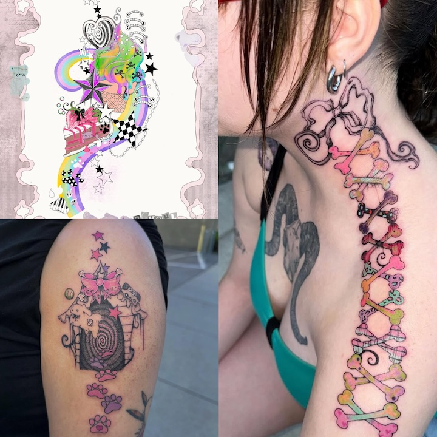
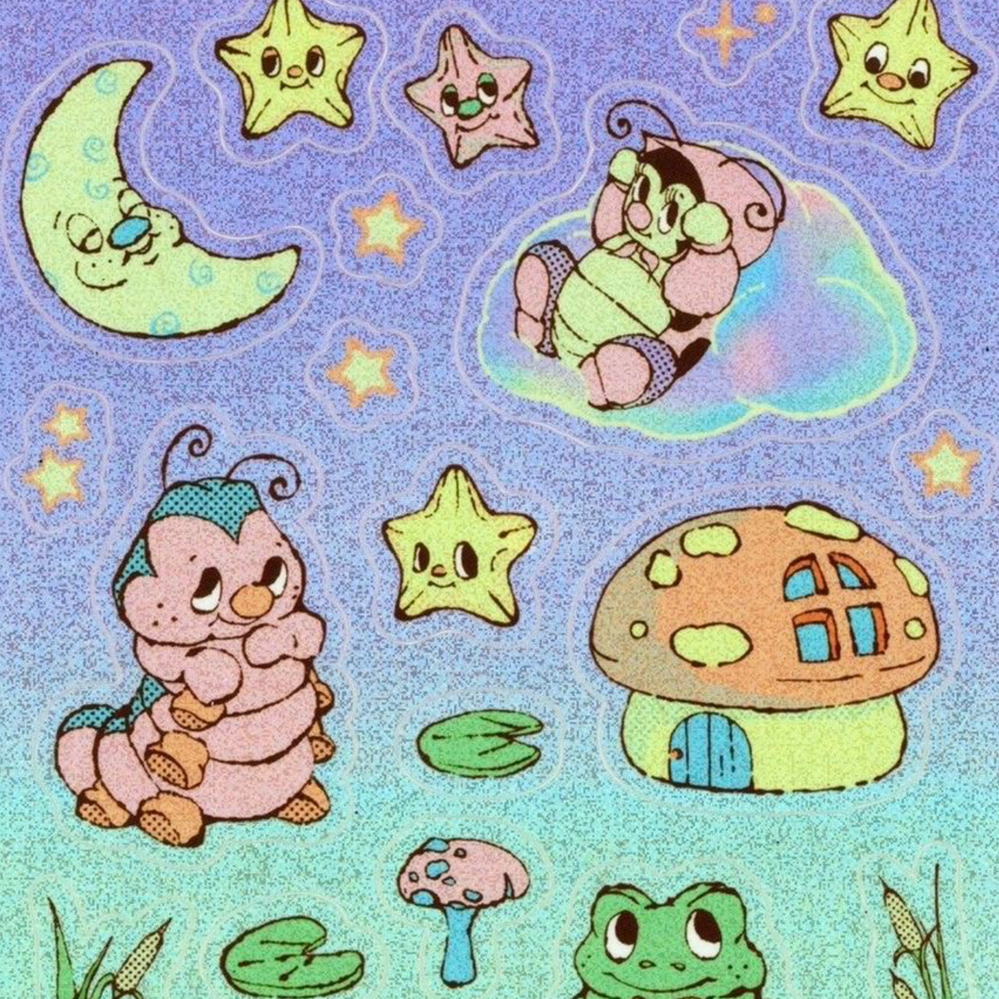
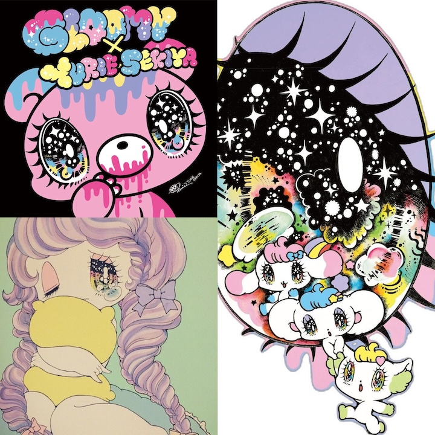

Lee Ann, aka 2ghoul4skool is a licensed tattoo artist who creates unique and vibrant artwork. I find her artwork to be very inspiring, even though I do not want to go into tattoo work because of her stylized approach and her use of colors, patterns, shapes and logos into her tattoo pieces. Even though each of her pieces is unique, they all have a similar style which is something that I appreciate about tattoo artists.

Hannah Michelle inspires me because her art is simple yet captivating. Her artwork is very cutesy style as well and I love her used of color, glitter, cute faces, and characters. I love how she uses a multitude of different media, often making stickers, prints and even clothing.

Yurie Sekiya is a Japanese artist who graduated with a degree in graphic design. Her artwork inspires me because of how she combines her personal style of art digitally. Digital art really interests me a lot since I feel like it is a new medium, compared to traditional art forms.